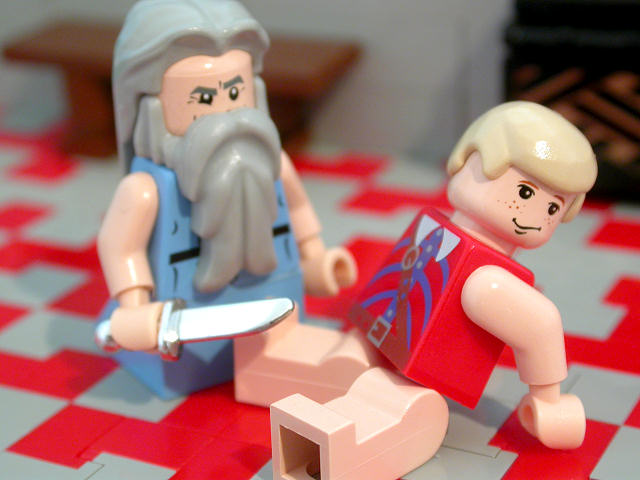

|
|
|
Acts 16
|

 (16:1-3) Paul circumcised Timothy, thereby making it impossible for him to be saved, according to his own words in
Galatians 5:2. (16:1-3) Paul circumcised Timothy, thereby making it impossible for him to be saved, according to his own words in
Galatians 5:2.
Is circumcision required?
(16:1) "Timotheus, the son of a certain woman, which was a Jewess, and believed; but his father was a Greek."
(16:3) "Paul ... took and circumcised him."
Paul Circumcises New Companion
|
| 16:1
Then came he to Derbe and Lystra: and, behold, a certain disciple was
there, named Timotheus, the son of a certain woman, which was a Jewess, and
believed; but his father was a Greek:
|
| 16:2
Which was well reported of by the brethren that were at Lystra and
Iconium.
|
| 16:3
Him would Paul have to go forth with him; and took and circumcised him
because of the Jews which were in those quarters: for they knew all that his
father was a Greek.
|
| 16:4
And as they went through the cities, they delivered them the decrees for
to keep, that were ordained of the apostles and elders which were at
Jerusalem.
|
| 16:5
And so were the churches established in the faith, and increased in number
daily.
|
| 16:6
Now when they had gone throughout Phrygia and the region of Galatia, and were forbidden of the Holy
Ghost to preach the word in Asia, |
(16:6-7)
Paul and the newly circumcised Timothy were forbidden by the Holy Ghost to preach in Asia. (God just doesn’t like Asians, I guess.)
Then they tried to go to Bithynia, but the Spirit wouldn't let them do that either. Shucks!
(16:6) "They .... were forbidden of the Holy Ghost to preach the word in Asia."
Should the gospel be preached to everyone?
(16:7) "They assayed to go into Bithynia: but the
Spirit suffered them not." Paul and the newly circumcised Timothy tried to go to Bithynia, but the Spirit wouldn't let them.
(16:9-12) A man appears to Paul in a dream telling him to go to Macedonia. So Paul, who was a big
believer in dreams, did as the dream-man requested.
(16:9) "A vision appeared to Paul in the night; There stood a man of Macedonia
... saying, Come over into Macedonia,
and help us."
(16:10) "After he had seen the vision, immediately we endeavoured to go into Macedonia."
(16:11-12) "Therefore ... we came ... to Philippi, which is the chief city of that part of Macedonia."
|
| 16:7
After they were come to Mysia, they assayed to go into Bithynia: but the
Spirit suffered them not.
|
| 16:8
And they passing by Mysia came down to Troas.
|
| 16:9
And a vision appeared to Paul in the night; There stood a man of
Macedonia, and prayed him, saying, Come over into Macedonia, and help us.
|
| 16:10
And after he had seen the vision, immediately we endeavoured to go into
Macedonia, assuredly gathering that the Lord had called us for to preach the
gospel unto them.
|
| 16:11 Therefore loosing from Troas,
we came with a straight course to Samothracia, and the next day to Neapolis;
|
| 16:12
And from thence to Philippi, which is the chief city of that part of
Macedonia, and a colony: and we were in that city abiding certain days.
|
| 16:13
And on the sabbath we went out of the city by a river side, where prayer
was wont to be made; and we sat down, and spake unto the women which
resorted thither.
|
| 16:14
And a certain woman named Lydia, a seller of purple, of the city of
Thyatira, which worshipped God, heard us: whose heart the Lord opened, that
she attended unto the things which were spoken of Paul. |
|
| 16:15
And when she was baptized, and her household, she besought us, saying, If
ye have judged me to be faithful to the Lord, come into my house, and abide
there. And she constrained us. |
(16:16-18) Paul expels a soothsaying spirit of divination.
(16:16) "A certain damsel possessed with a spirit of
divination met us, which brought her masters much gain by soothsaying."
|
| 16:16
And it came to pass, as we went to prayer, a certain damsel possessed with a spirit of
divination met us, which brought her masters much gain by soothsaying:
|
| 16:17
The same followed Paul and us, and cried, saying, These men are the
servants of the most high God, which shew unto us the way of salvation. |
|
| 16:18
And this did she many days. But Paul, being grieved, turned and
said to
the spirit, I command thee in the name of Jesus Christ to come out of her.
And he came out the same hour. |
(16:18) "Paul ... said to the spirit, I command thee in the name of Jesus Christ to come out of her. And he came out the same hour."
|
| 16:19
And when her masters saw that the hope of their gains was gone, they
caught Paul and Silas, and drew them into the marketplace unto the rulers, |
|
| 16:20
And brought them to the magistrates, saying, These men, being Jews, do
exceedingly trouble our city, |
|
| 16:21
And teach customs, which are not lawful for us to receive, neither to
observe, being Romans. |
|
| 16:22
And the multitude rose up together against them: and the magistrates rent
off their clothes, and commanded to beat them. |
(16:22) "The magistrates rent off their clothes."
(16:26) Another Holy Prison Break!
"Suddenly there was a great earthquake, so that the foundations of the prison were shaken: and immediately all the doors were opened,
and every one's bands were loosed." Paul and
Silas were rescued by an earthquake that opened all the doors of the prison.


 (16:31) "What must I do to be saved?"
(16:31) "What must I do to be saved?"
If you "believe on the Lord Jesus
Christ," then you and your whole family
will be saved; otherwise, God will send you all to hell. But in Matthew (19:17), when Jesus was asked the same question, he
gave an entirely different answer.
Is Salvation by faith alone?
What must you do to be saved?
(16:30) "What must I do to be saved?"
(16:31) "Believe
on the Lord Jesus Christ, and thou shalt be saved, and thy house."
If a husband believes, his whole family is automatically saved.
If a husband believes, is his wife saved also?
 (16:33) "He ... was baptized, he and all his, straightway."
(16:33) "He ... was baptized, he and all his, straightway."
The jailer was so impressed with the holy jailbreak that he converted on the spot. He and his entire family were baptized that night.
It didn't matter to Paul (or God) what the jailer's wife and kids thought about it. They were "his" so he could do whatever the hell he wanted
with (or to) them. (This stupid story supports the idea of infant baptism, which has divided Christians for centuries.)
|
| 16:23
And when they had laid many stripes upon them, they cast them into prison,
charging the jailor to keep them safely:
|
| 16:24
Who, having received such a charge, thrust them into the inner prison, and
made their feet fast in the stocks.
|
| 16:25
And at midnight Paul and Silas prayed, and sang praises unto God: and the
prisoners heard them.
|
| 16:26 And suddenly there was a great earthquake, so that the foundations of the
prison were shaken: and immediately all the doors were opened, and every
one's bands were loosed.
|
| 16:27
And the keeper of the prison awaking out of his sleep, and seeing the
prison doors open, he drew out his sword, and would have killed himself,
supposing that the prisoners had been fled.
|
| 16:28
But Paul cried with a loud voice, saying, Do thyself no harm: for we are
all here.
|
| 16:29
Then he called for a light, and sprang in, and came trembling, and fell
down before Paul and Silas,
|
| 16:30
And brought them out, and said, Sirs, what must I do to be saved?
|
| 16:31
And they said, Believe
on the Lord Jesus Christ, and thou shalt be saved, and thy house.
|
| 16:32
And they spake unto him the word of the Lord, and to all that were in his
house.
|
| 16:33
And he took them the same hour of the night, and washed their stripes; and
was baptized, he and all his, straightway.
|
| 16:34
And when he had brought them into his house, he set meat before them, and
rejoiced, believing in God with all his house.
|
| 16:35
And when it was day, the magistrates sent the serjeants, saying, Let those
men go.
|
| 16:36
And the keeper of the prison told this saying to Paul, The magistrates
have sent to let you go: now therefore depart, and go in peace.
|
| 16:37
But Paul said unto them, They have beaten us openly uncondemned, being
Romans, and have cast us into prison; and now do they thrust us out privily?
nay verily; but let them come themselves and fetch us out. |
|
| 16:38
And the serjeants told these words unto the magistrates: and they feared,
when they heard that they were Romans. |
|
| 16:39
And they came and besought them, and brought them out, and desired them to
depart out of the city. |
|
| 16:40
And they went out of the prison, and entered into the house of Lydia: and
when they had seen the brethren, they comforted them, and departed.
|
|
|